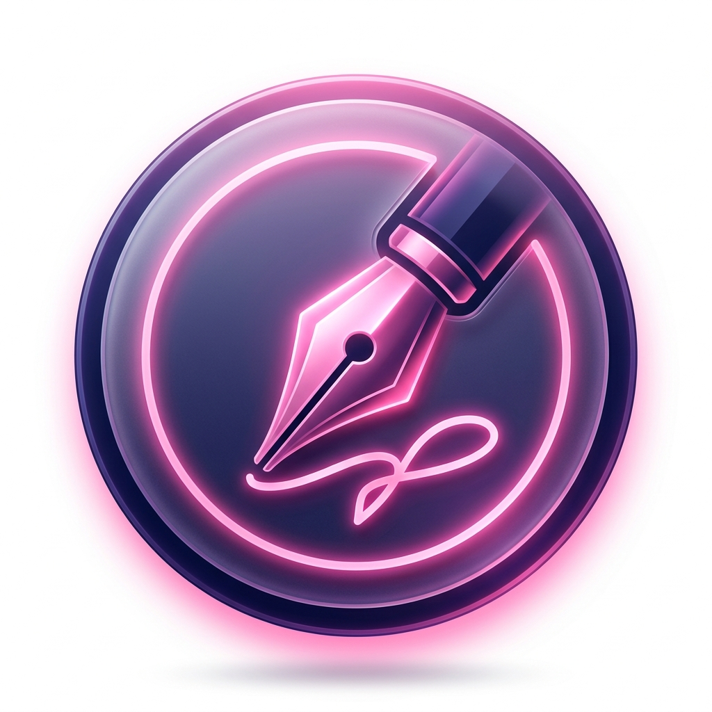

Simpink Settings
Screenshot Folder
Select Folder...
Pro Typography Settings
Family
Sans-serif
Serif
Monospace
Color
Size
B
I
Video Recording quality
High Definition (10 Mbps)
Pro-Grade (25 Mbps - Crystal Clear)
Standard (5 Mbps)
Individual Pen Config
Reset Defaults
Save & Close
